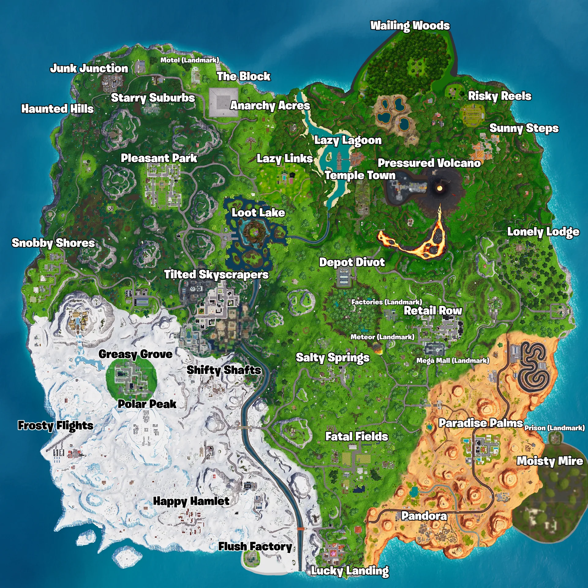
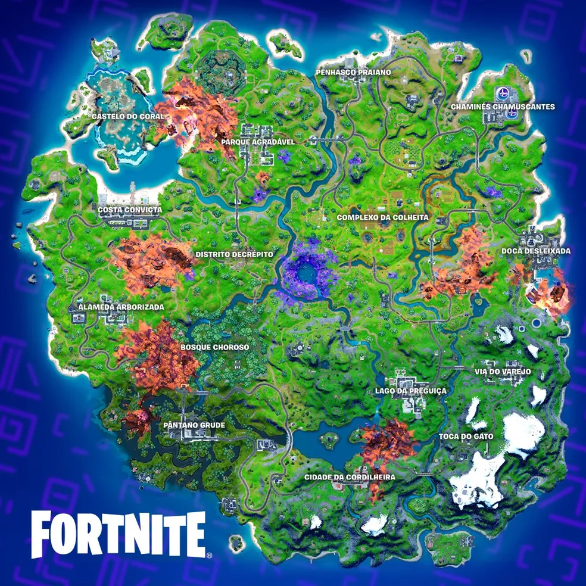
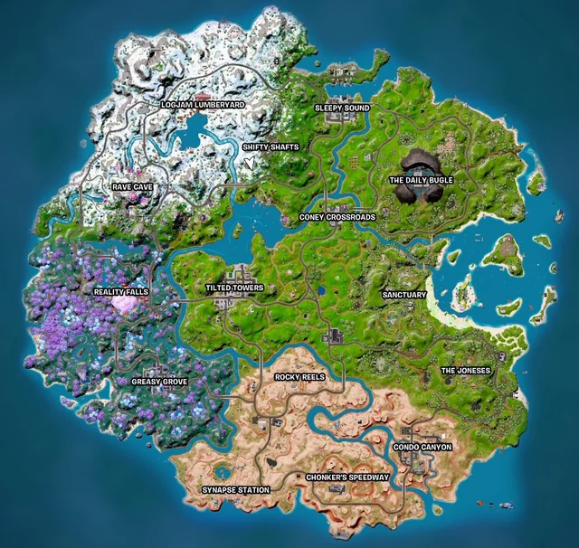
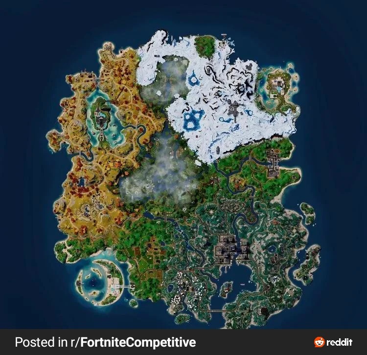
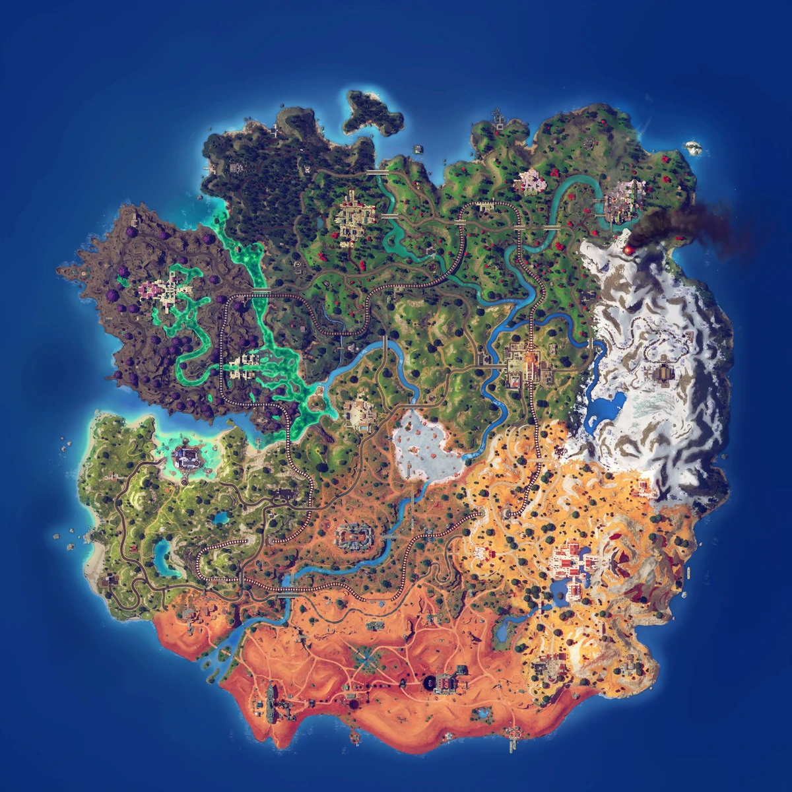

Capítulo 1 O Início (2017-2019)
O Capítulo 1 de Fortnite começou com o lançamento do jogo em 2017. Embora a versão de Battle Royale tenha sido disponibilizada em setembro de 2017, o jogo tinha, originalmente, um modo PvE chamado "Salvar o Mundo". A narrativa central de Fortnite no Capítulo 1 girava em torno de um evento cósmico que causou uma invasão de monstros e criaturas, e os jogadores precisavam sobreviver a esses ataques. Eventos principais: O Impacto do Meteorito: Em 2018, um meteorito misterioso caiu na ilha do jogo, trazendo consigo um item que alterou a jogabilidade. O Cubo (Kevin): Um evento importante no Capítulo 1 foi a chegada de um misterioso cubo roxo que levava a ilha a mudanças. Ele se moveu por várias partes da ilha e, no final, causou a criação de uma ilha flutuante, mudando permanentemente o mapa do jogo. O Evento da Fenda (The Rift): Uma fenda misteriosa apareceu no céu, alterando a paisagem de Fortnite. Isso levou à introdução de portais que permitiam aos jogadores teleportar e acessar novos pontos da ilha. O Capítulo 1 culminou em um grande evento, "O Fim" (The End), onde uma enorme explosão causou o apagão do jogo, levando à transição para o Capítulo 2.
Capítulo 2 O Novo Começo (2019-2021)
No Capítulo 2, o jogo reiniciou com um novo mapa, novos itens e novas mecânicas de gameplay. Embora a narrativa fosse mais focada em eventos no jogo, havia a presença de uma guerra secreta entre facções misteriosas. Eventos principais: A Agente Jonesy: Um dos personagens mais importantes do jogo, Jonesy, era um agente que atravessava diferentes realidades e épocas devido às fendas temporais. Ele foi peça chave em muitos eventos e tinha a missão de impedir que a estrutura do "Loop" fosse quebrada. A chegada da Ordem Imaginada: Uma facção que tentava controlar o "Loop", o ciclo temporal que se repetia constantemente na ilha. O Apocalipse: Durante o evento da temporada 4, o mundo de Fortnite foi ameaçado por uma invasão de alienígenas liderados por uma entidade chamada "O Conquistador". Este evento culminou no confronto com a nave espacial de Galactus, um dos vilões da Marvel, que quase destruiu a ilha de Fortnite. A Era da Colaboração com Marvel: Durante o Capítulo 2, várias colaborações com franquias de filmes, como Marvel, Star Wars e outros, trouxeram personagens icônicos para o jogo, incluindo os heróis da Marvel como Iron Man, Thor, Wolverine, entre outros. O Capítulo 2 terminou com o evento de A Tempestade do Fim do Mundo, onde a ilha foi submersa em água, dando lugar a uma nova realidade no Capítulo 3.
Capítulo 3 A Guerra Secreta Os Sete e a Imaginação
A Guerra Secreta Os Sete e a Imaginação A narrativa do Capítulo 3 foi profundamente influenciada pela luta entre facções opostas: Os Sete e a Ordem Imaginada (The Imagined Order). Os Sete são um grupo de heróis (ou anti-heróis) que se opõem à Ordem Imaginada, uma organização secreta e poderosa que controla o "Loop" – o ciclo de reinícios da ilha de Fortnite. Os Sete desejam quebrar o Loop e libertar as pessoas presas nesse ciclo. Os Sete são compostos por figuras como o Fundador, o Cavaleiro, a Fundadora, o Agente Jonesy, entre outros. A Ordem Imaginada é uma organização que manipula as realidades e busca manter o controle sobre a ilha e suas transformações. Durante o Capítulo 3, a luta entre essas duas facções foi central para o desenvolvimento da história. A Ordem Imaginada tenta manter a ilha sob controle, enquanto os Sete buscam a liberdade.
Capitulo 4 Realidade Zero(2022-2023)
- O Capítulo 4 começou após o evento ao vivo chamado *"Fracture"*, onde a ilha do Capítulo 3 foi destruída e reconstruída em um novo formato no espaço. - Uma nova ilha foi formada, contendo biomas variados e locais inéditos, como a *Cidadela, a Fazenda Fraturada, e os Bosques Ancestrais. A história continuou explorando o multiverso e apresentou novos personagens e mistérios envolvendo o Ponto Zero, um dos elementos centrais do enredo do Fortnite.
Capítulo 5 Fronteiras Desconhecidas(2023-2025)
Após o evento "Big Bang", a linha do tempo de Fortnite foi reiniciada, formando uma nova ilha e começando uma nova era. Nessa temporada, Peely, o amigo banana antropomórfico de Jones, foi sequestrado, desencadeando uma batalha entre duas facções: "The Underground", liderada por Jones e sua nova parceira Hope, e "The Society", que mantinha Peely como refém, liderada por Valeria, irmã de Hope. Colaborações notáveis incluíram personagens de Family Guy, Metal Gear, Teenage Mutant Ninja Turtles, The Weeknd, Lady Gaga, e vilões de Dragon Ball. A temporada culminou com a abertura de um baú antigo, liberando uma tempestade de almas na ilha.
Capítulo 6 Horizonte Neo-Tokyo (2025)

A temporada não tem uma história definida ainda, apenas o seu mapa foi lançado